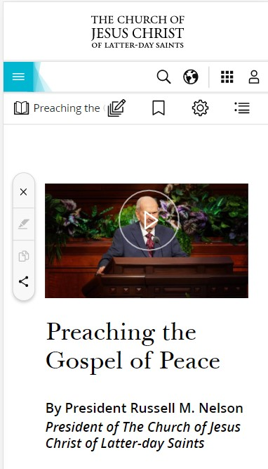
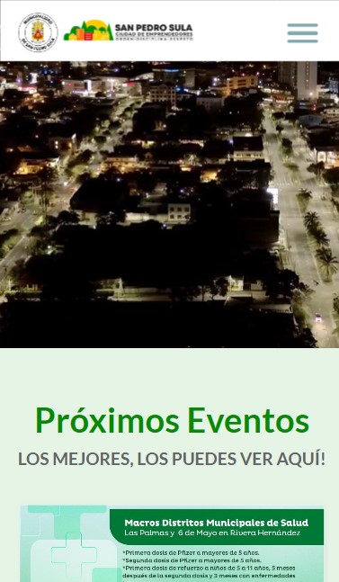
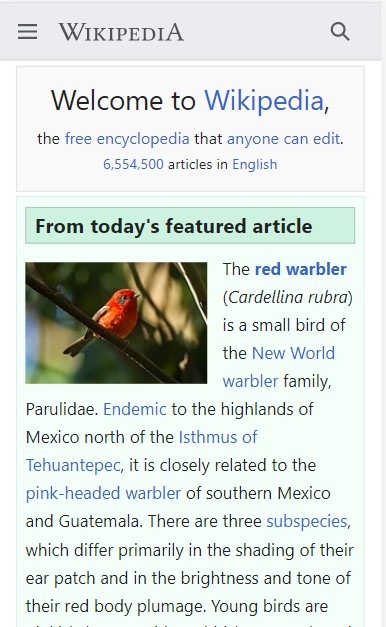

PARC: Alignment
Church of Jesus Christ
churchofjesuschrist.org The visual connection that exists from one element to another on the Church page is correct and not distracting, it contains the elements in order and aligned in such a way that it facilitates navigation.
Visual Hierarchy
Municipalidad de San Pedro Sula
sanpedrosula.hn The visual hierarchy that this website has in detail, typography, originality, simplicity and style, manage to forge a great visual help to the user, this type of interface makes the user react quickly and the user's eyes.
PARC: Repetition
Wikipedia
en.m.wikipedia.org The repetition presented on the wiklipedia website allows an ease of predictability for the user when browsing it, and at the same time comfort and a good experience of it. The design shows clarity in what you want to convey to the user